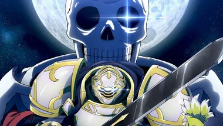
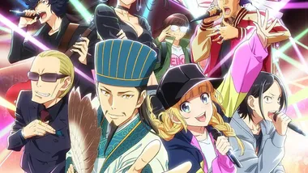
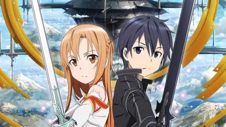
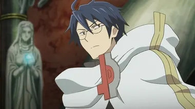
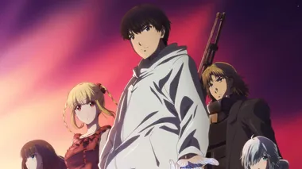
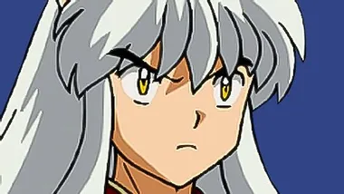
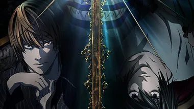
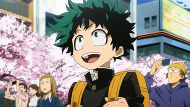
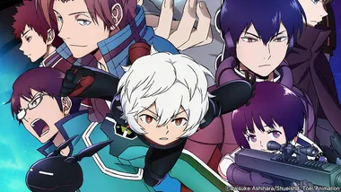
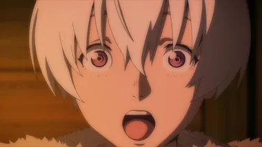

AniMaGa

해골기사님은 지금 이세계 모험 중
MMORPG 플레이 도중 깜박 잠들었다 눈을 떠보니 게임 캐릭터의 모습으로 낯선 이세계에 떨어진 「아크」. 그런데 겉은 갑옷, 속은 전신골격인 해골기사라고!?
정체를 들키면 몬스터로 오해를 받아 토벌대상이 될지도 모른다! 눈에 띄지 않게 용병으로 지낼 것을 결심한 아크는 다크엘프 미녀 아리안에게 고용되고, 사로잡힌 엘프족의 탈환작전을 돕는다. 그러나 그 뒤에서는 왕족의 음모가 소용돌이치는데!?
최강의 해골기사가 일으키는 무자각 ‘사회혁명’ 이세계 판타지!

파티피플 공명
삼국지 시대, 천하태평을 위해 살아온 그는 이제 무엇을 위해 살아가는 것인가—!!
오장원 전투에서 죽음을 맞이한 명군사 제갈량 공명은 젊은 육체로 되돌아와 현대 일본에 전생했다.
시부야의 클러버들에게 권유받아 도착한 곳은 댄스 뮤직이 울려 퍼지는 경박한 클럽.
그곳에서 가수가 목표인 츠키미 에이코와 만나며 공명의 두 번째 인생이 막이 오른다!

소드 아트 온라인 1기
2022년 전자기기 업체 개발자들이 〈너브 기어〉라고 하는 가상공간 접속기를 개발한 것으로, 세계는 완전한 '버추얼 리얼리티(VR)'를 실현하게 된다. 주인공 '키리토'는 너브 기어를 사용한 VR MMORPG 소드 아트 온라인(SAO)의 플레이어로, 베타 테스터에 뽑혀 정규판도 구입하여 게임상에서 만난 클라인과 함께 정규판 SAO의 세계를 만끽하고 있었다.
그러나 베타 테스트 때에는 확실히 가능했던 로그아웃을 할 수 없다는 것을 알아차린 직후, 게임 시작 지점으로 소환된 약 1만 명의 SAO 플레이어들은 게임 마스터이자 SAO의 개발자인 카야바 아키히코에게 튜토리얼을 듣게 된다. 카야바는 SAO의 무대 ‘아인크라드’의 최상층인 100층의 보스를 쓰러뜨려 게임을 클리어하는 것만이 로그아웃할 수 있는 유일한 방법이라고 말한다. 그리고 이 게임에서 사망하거나, 현실 세계에서 너브 기어를 강제적으로 풀려고 하면 너브 기어가 고출력 마이크로파를 발생시켜 뇌를 파괴하게 된다. 즐기는 게임에서 죽음의 데스매치로 변해버린 SAO의 클리어를 위하여 1만 명의 플레이어들이 부단한 노력을 기울이지만, 그만큼 수많은 희생자가 발생했다. 2년 후, ‘아인크라드’의 최전선은 75층이었고 플레이어는 대략 6천 명까지 줄어들고 있었다. 75층의 보스를 쓰러뜨린 후, 키리토가 최종 보스인 카야바 아키히코가 플레이어인 히스클리프인 것을 간파했고, 카야바를 이김으로써 클리어하게 된다.

로그 호라이즌 1기
전 세계에서 인기를 끌고 있는 북미계 MMORPG 「엘더테일」이 열두 번째 확장팩인 〈누스피어의 개간〉(ノウアスフィアの開墾)이 패치되는 순간 당시 접속 중이던 엘더테일의 유저들이 느닷없이 게임 속으로 빨려 들어간다. 「엘더테일」의 헤비 게이머인 인챈터 시로에는 이 날 게임 접속하고 있다가 다른 게이머들과 함께 의식을 잃고, 게임 속 세상 안에서 깨어나게 된다.[1]
시로에는 처음에는 당황했지만 특유의 침착함으로[2] 상황을 빨리 받아들이고 전설적인 게이머 그룹 <방탕아의 티파티>( <디보처리 티파티>라고 불리기도 한다.) 전 멤버이자 동료였던 가디언 나오츠구, 실력 있는 어새신 아카츠키, 길드 초승달 동맹의 길드 마스터인 마리엘 등을 만나며 엘더테일 내의 누구보다도 빠르게 새롭게 바뀐 환경에 적응해간다.
이세계 마왕과 소환 소녀의 노예 마술
MMORPG 크로스 레버리에서 사카모토 타쿠마는, 다른 플레이어에게 「마왕」이라 불릴 정도로 압도적인 강함을 자랑하였다.
어느 날 그는 게임 내의 모습으로 이세계로 소환되어 버린다. 거기에는 「나야말로 소환주」라 우기는 소녀 두 명이 있었다.
타쿠미는 그녀들로부터 소환 수용의 노예화 마법을 받게 된다―
하지만 고유 능력 《마술 반사》 발동! 노예가 된 건 소녀들이었다!
당황하는 타쿠미. 그는 최강의 마술사였지만 커뮤니케이션 능력이 전무했다.
고민 끝에 나온 한마디는 게임 내에서 쓰던 마왕 말투로!?
「내가 대단하다고? 당연하다. 나는 디아블로…… 사람들이 마왕이라고 부르며 두려워하는 자다!」
머지않아 세계를 뒤흔드는 마왕(연기)이 절대적인 힘으로 치닫는 이세계 모험담, 개막!
노 게임 노 라이프
백수에 골방지기지만 인터넷에서는 도시전설이라는 이야기마저 떠도는 천재 게이머 남매, 소라(空)와 시로(白). 둘이 합쳐 하나인 『 』(공백)인 남매는 세상을 「쓰레기 게임」이라 부르며 지내던 어느 날, 『신』을 자칭하는 소년에게 이끌려 이세계로 소환된다. 그곳은 신에 의해 전쟁이 금지되었으며, 『모든 것』── 「국경선마저도 게임으로 결판이 나는」 세계였다.
다른 종족들에게 연패를 거듭해 마지막 도시 하나만을 남겨둔 인류. 소라와 시로 폐인남매가 이세계에서는 ‘인류의 구세주’가 될 수 있을까?

다윈즈 게임
평범한 고등학생 스도 카나메는 어느 날 친구로부터 다윈즈 게임 이라는 앱 초대를 받는다. 그 게임은 각 플레이어에게 제각각 주어진 초능력[1]으로 서로 싸우는 것을 강요하는 능력자들의 배틀 게임이었다. 카나메는 쇠사슬을 사용하는 미소녀 카리노 슈카를 비롯해 여러 동료들을 만들고 클랜 '선셋 레이븐즈'를 신설한다. 사람을 죽고 죽이는 게임인 다윈즈 게임에 증오를 느낀 카나메는 동료들과 함께 시길을 사용하여 다윈즈 게임을 파괴하기 위한 여정을 시작한다

이누야샤 1기
현대의 여중생 히구라시 카고메가 우물을 통해 전국시대로 시간 이동하게 된다. 그 시대를 사는 반요(개 요괴) 이누야샤를 만나 모험을 하게 된다.

데스노트-리마스터
만화의 제목이자 작품의 주제를 상징하는 '데스노트'는 사신들이 인간들을 죽일 때 사용하는 공책으로, 한 인간의 본명과 얼굴을 알아야만 죽일 수 있다. 썩어가는 사신계에 회의를 느끼고 있던 사신 류크는 유희에 가까운 목적으로 데스노트를 인간계에 떨어뜨리고, 주인공인 고등학생 야가미 라이토가 우연히 이를 줍게 된다.
데스노트가 진짜로 사람을 죽이는 물건이란 걸 알게 된 라이토는 고뇌하다가, 노트를 세상을 위하여 사용하기로 하고 온 세계의 범죄자들을 죽이기 시작한다. 한편 많은 범죄자들이 비정상적인 이유로 사망하는 사태를 두고 인터폴에서도 회의가 열렸을 때 '세계 최고의 명탐정'이라 불리는 L이 이 사건에 뛰어들 것을 선언하면서 라이토와 L의 추리 두뇌 싸움이 벌어진다.

나의 히어로 아카데미아 1기
'개성'이라는 초능력을 갖고 태어나는 게 당연한 세계, 현재 인류 8할이 개성을 소유하고 있다. 초능력자들이 많아짐에 따라 과거 만화에서나 나오던 히어로라는 직업이 각광받게 되고 주인공 미도리야 이즈쿠도 히어로를 동경하고 있다. 하지만 무개성인 이즈쿠는 히어로가 될 수 없었고, 주변에서도 포기하란 말만 듣는다.
그러던 어느 날, 동경하는 히어로 올마이트와 만나지만 올마이트 역시 히어로의 삶이 겉보기와 달리 처참하기 짝이 없다며 포기하라고 충고한다. 그런데 이즈쿠는 올마이트가 추적하던 빌런이 소꿉 친구를 붙잡고 있는 광경을 보고 아무 생각 없이 구하려고 뛰어들고, 비로소 올마이트는 이즈쿠를 인정하며 '히어로가 될 수 있다'며 한 가지 방법을 알려주는데...
이렇게 해서 무개성이었던 미도리야 이즈쿠는 최고의 히어로를 목표로 성장해 나간다.

월드 트리거 1기
28만 인구의 미카도시에 이(異)세계로의 게이트가 생겨 이세계로부터의 침략자들인 근계민(네이버)의 습격을 받게 된다.
네이버들에게 이쪽 세계의 무기가 잘 통하지 않아 난관에 처한 인류였으나, 수수께끼의 조직이 돌연 나타나 네이버를 격퇴하기 시작한다. 경계방위기관 '보더'라는 그 조직은 네이버들의 기술들을 연구하여 그 기술로 그들을 맞대응한 것이었다.
문이 열리고 4년 뒤, 여전히 네이버들의 침략은 멈추지 않았으나 보더의 활약 덕분에 도시는 안정을 되찾고, 사람들은 미카도시에 계속 남아있을 수 있었다. 그리고 어느 날 이 미카도시에 전학을 온 "쿠가 유마"라는 소년과 정의감이 강한 소년 "미쿠모 오사무"와 만나게 된다...!

불멸의 그대에게 1기
누군가에 의해 '구체(球體)'가 이 지상에 던져졌다.
정보 수집을 위해 기능하며,
온갖 것들로 모습을 바꿀 수 있는 그 구체는
죽음마저 초월하는 존재.
구체는 어느 날, 소년과 만나고, 또 헤어진다.
빛, 냄새, 소리, 따스함, 아픔, 기쁨, 슬픔....
자극으로 가득한 이 세계를 방황하는
영원의 여행이 시작된다.
이것은 자신을 획득해 나가는 이야기.